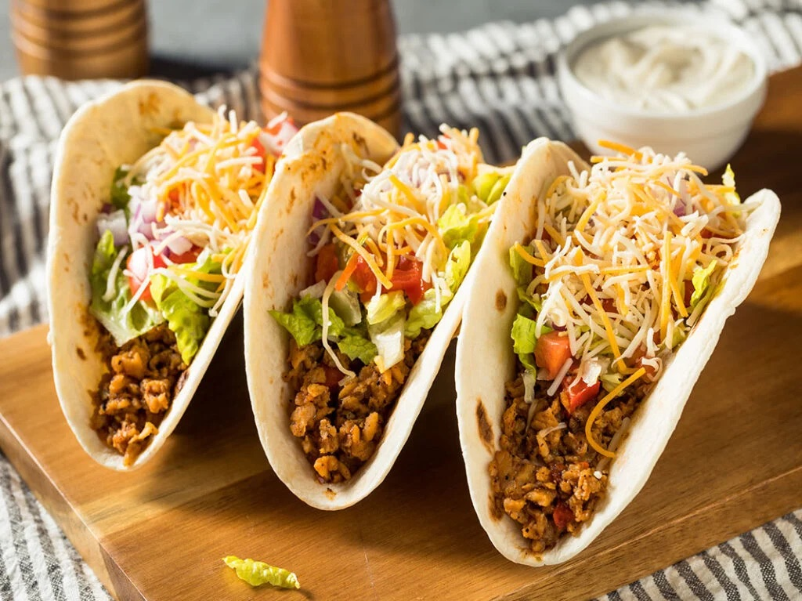

Beef Tacos

Description
This is a healthy, high protein, high fiber beef taco recipe
Ingredients
- Soft corn tacos
- Olive oil
- Ground beef 90%
- Beef siete seasoning
- Mexican shredded cheese
- Avocado
- Pickled onions
- Black beans
Steps
- Heat 0.5 tsp of olive oil in a pan
- Add 5oz ground beef to the pan and mix with 2 tsp Siete seasoning
- After beef is cooked, add to tacos
- Top with Mexican shredded cheese, avocado, black beans, and pickled onions
Home